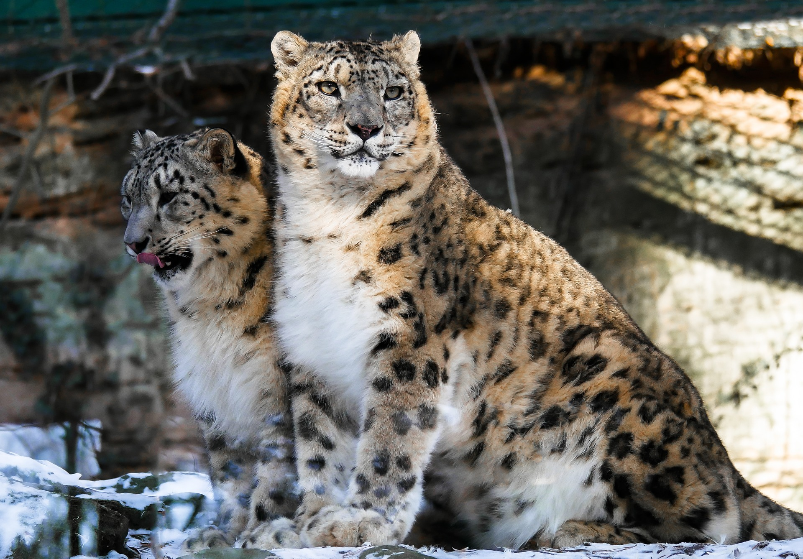
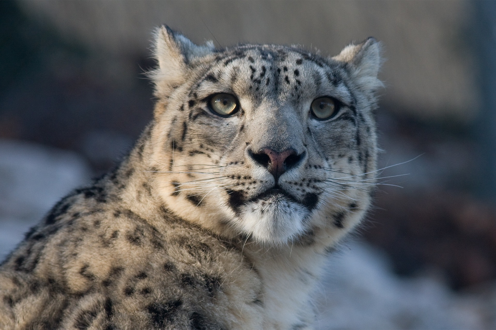
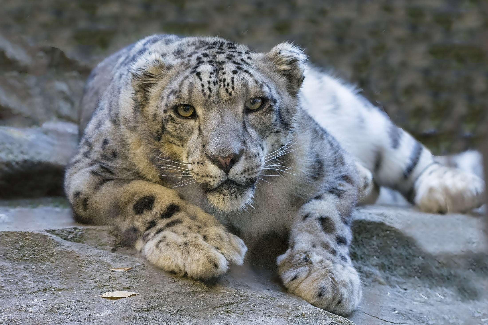

- The snow leopard shows several adaptations for living in a cold, mountainous environment. Its body is stocky, its fur is thick, and its ears are small and rounded, features that help to minimize heat loss. Its broad paws well distribute the body weight for walking on snow, and have fur on their undersides to increase their grip on steep and unstable surfaces; it also helps to minimize heat loss.

- The snow leopard's fur is whitish to gray with black spots on head and neck, but larger rosettes on the back, flanks and bushy tail. The belly is whitish. The fur is thick with hairs between 5 and 12 cm (2.0 and 4.7 in) long. Its body is stocky, short-legged and slightly smaller than the other cats of the genus Panthera, reaching a shoulder height of 56 cm (22 in), and ranging in head to body size.

- The snow leopard cannot roar, despite possessing partial ossification of the hyoid bone. This partial ossification was previously thought to be essential for allowing the big cats to roar, but new studies show that the ability to roar is due to other morphological features, especially of the larynx, which are absent in the snow leopard. Snow leopard vocalizations include hisses, chuffing, mews, growls, and wailing.